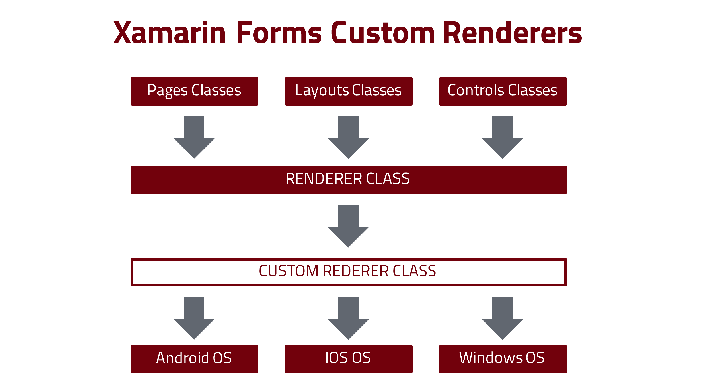
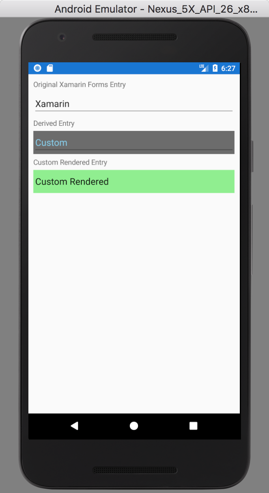
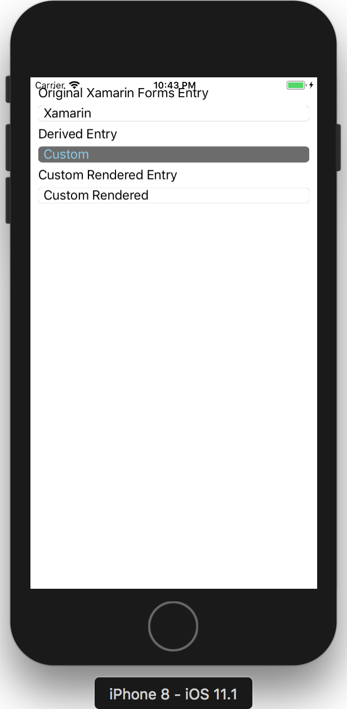

What is a Custom Renderer
A Custom Renderer is a developer made Renderer Class that customises the appearance and behaviour of a UI control. The Renderer Class is responsible for creating the Xamarin.Forms representation of pages, layouts or controls for each platform (IOS, Android or Windows Phone). An alternative to Custom Renderers is the development of Custom Controls through subclassing.

The Custom Renderer Class is a derived class implementation of the Renderer Class responsible for rendering the corresponding UI object in each platform. Each Xamarin Forms UI element has its renderer for the native control it represents.
Why you need a Custom Renderer
The alternatives to implement a Custom Renderer is to use subclassing or Effect. These techniques are limited in what they can achieve as it is not possible to take advantage of platform-specific enhancements and customisations. When they are required, custom renderers must be implemented.
How to create a Custom Renderer
The process for creating a custom renderer class is as follows:
- Create a subclass of the renderer class that renders the native control.
- Override the method that renders the native control and write the logic to customise the control. Often, the OnElementChanged method is used to render the native control, which is called when the corresponding Xamarin.Forms control is created.
- Add an ExportRenderer attribute to the custom renderer class to specify that it will be used to render the Xamarin.Forms control. This attribute is used to register the custom renderer with Xamarin.Forms.
Quick Example
In this example, I create a custom renderer for the Entry input field from Xamarin Forms. To show the different results, I also provide the code for a derived class using the subclassing technique mentioned.
Source code for the subclass MyEntry
using Xamarin.Forms;
namespace CustomRenderer
{
public class MyEntry: Entry
{
public MyEntry()
{
BackgroundColor = Color.FromHex("#6c6c6c");
TextColor = Color.SkyBlue;
}
}
}
This code creates a Custom Control derived from the class Entry. In the class constructor, I alter the Background Color and Text Color for the control.
Source code for the Custom Renderer
using Xamarin.Forms;
using Xamarin.Forms.Platform.Android;
using CustomRenderer;
[assembly: ExportRenderer(typeof(CustomEntry), typeof(SampleCustomRenderer.Droid.AndroidEntry))]
namespace SampleCustomRenderer.Droid
{
public class AndroidEntry: EntryRenderer
{
protected override void OnElementChanged(ElementChangedEventArgs<Entry> e)
{
base.OnElementChanged(e);
if (Control != null)
{
Control.SetBackgroundColor(global::Android.Graphics.Color.LightGreen);
}
}
}
}
In this code, I create a Custom Renderer that will create a customised AndroidEntry control. Inside the OnElementChanged method, I alter the Background colour for this control.
Result

In the image, we can see three different versions of the same control. The first is the original Xamarin Forms version of the Entry Control. The second is the subclass MyEntry control. And third, at the bottom, is the Custom Rendered Control for Android.

The same application is rendered different for the IOS. The custom rendered control has the same appearance as the original Xamarin Forms Entry since it does not have a Custom Renderer implemented for the IOS.
The complete source code for this project is available in GitHub Xamarin Custom Renderer Example.
References
Xamarin Custom Renderes Date Accessed: 2017-10-23
Basics of Xamarin Forms Custom Renderers Date Accessed: 2017-11-23